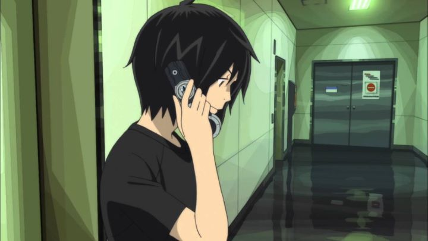

Disclaimer: this review covers the films "Eden of the East - The King of Eden" (2009) and "Eden of the East - Paradise Lost" (2010), as well as the compilation film "Eden of the East - Air Communication" (2009).As fantastic as the first season of "Eden of the East" (2009) is, most viewers seemed disappointed in the cliff-hanger ending. I rather liked it myself and wouldn't change a thing about that final episode. However, fans would be pleased when a duo of sequel films were announced almost immediately after the television broadcast had finished. The reason I decided to write about both within the same review is because, try as you might, they are both really inseparable: "The King of Eden" on its own feels like a slow beginning with a lack of content, and "Paradise Lost" feels like a rush to a conclusion, the content of which may disappoint some viewers. The entirety feels like it could have be combined and edited into a single two-hour film rather than three hours split across two films. Nonetheless, if you are left remotely curious at the end of episode 11 of "Eden of the East," these films are required viewing.Firstly, I'll briefly mention "Air Communication," a compilation film of the series included in subtitled-only format as a bonus feature in Funimation's home video release in the USA. It was meant to remind viewers of the story up to that point in a more concise format. When anime compilation films are made like this, they tend to be be poor retellings, and "Air Communication" is no exception. But at least it tries to be clever in setting up the film as a series of flashbacks, narrated by Saki and her college club as if they were going through a series of home videos and pictures. It can be a fun watch if taken as a audio commentary by the fictional characters of the show. However, this also means trying to follow the plot is difficult for first-timers, and the lack of an English dub (despite the ease to make one without any new lip-sync scenes required) makes it difficult to watch for those who watched the dub for the series and the two new films. Hence, it is a curiosity, but a skippable one.To talk about "The King of Eden," I have to spoil the story up to the end of the series, to which it takes place immediately after. At the end of the show, after saving the city from a public missle attack, Akira had used his phone to request that he be made the King of Japan. His memories are immediately whiped, and a mob of citizens rush in to carry Akira off in celebration for saving their lives. Saki is left wondering what became of him, and the film opens with her in New York City, where she believes Akira has ended up. After losing her purse in a taxi, she is left helpless on a sidewalk; she looks out and sees her college friends from the "Eden club" bunched up in a group watching her, ready to support her in her quest. Saki then looks up to the sky, both in hope to find her love in need of her help, while also feeling lost and not knowing what to do next. This opening scene is a significant reminder of where "The King of Eden" goes wrong. While the series was able to balance the mystery-thriller plot with elements of youthful love, "The King oif Eden" leans heavily in romance and longing. If that was your favorite part of the show, then all the better, but otherwise you will feel slightly disappointed in what appears an attempt to cater to a female audience. And the plot is largely around Saki and Akira: while the other members of the game have small parts to play in this film, Saki's friends are left with nothing to do, with less reason to be present than their already strained existance in the show. So "The King of Eden"'s main draw is in the mystery and reveal of finding Akira again (spoiler alert: they find him about one-third into the film), and then setting up what will be the conclusion to the game, which carries out in "Paradise Lost." Here, the pace picks up in a better way, and even Saki's entourage are given significant parts to play, while Saki herself tries to find out Akira's past through his lost biological parents, and Akira moves forward on his final play to save Japan. Much of the mysteries are revealed by the end of it all. The issue then is that the answers to the mysteries aren't all that exciting. Namely, any thought that there were risks to the players of the game were just misinterpretations and coincidences, and there was never any indication to do more than erase their memories and return them to their daily lives after it was all over. And ultimately, Akira's final action is a form of naive optimism, so if you were hoping for the answer to world peace to be revealed, you may be left wanting. Not to mention that there were tewlve players in the game, and unlike other stories in the genre, many of the players are not ever revealed, let alone given screen time to be relavent. The production values are solid, but not significantly more so than the TV series, disappointing given that this should have been an improvement in budget and format. The music is the one point that continued to impress me from beginning to end, a well-tuned soundtrack.In conclusion, the story for these two sequel films are most certainly a disappointment from the mystery standpoint. But if you just wanted answers, and if you wanted to see the romance between Saki and Akira blossom just a little more, then you will get what you paid for. Ultimately, I still had fun with the journey in what is a strong and influencial franchise, even though I might have been more satisfied stopping at the TV series.
- "Ani" More reviews can be found at : https://2danicritic.github.io/ Previous review: review_Eden_of_the_East Next review: review_Eleanor's_Secret